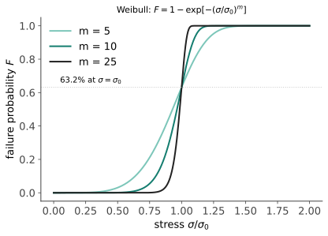

性能 IV · 陶瓷与玻璃工程
陶瓷抗压强度可达钢的数倍、硬度与耐温冠绝群雄，却因为脆而长期只能做碗和砖。现代陶瓷工程的全部智慧就是回答一个问题：如何与脆性共处——统计设计（Weibull）、增韧机制、以及"扬长避短"的应用哲学。
1. 脆性的根源与统计后果
根源（结构 I 的账）：离子/共价键的方向性与静电约束 ⇒ 位错难动 ⇒ 裂尖无塑性区 ⇒ \(K_{IC}\) 只有金属的几十分之一（性能 II）。后果：强度由最大缺陷决定，而缺陷是随机分布的 ⇒ 强度本身是随机变量。

两个工程推论：① 尺寸效应——体积越大越弱（大件包含大缺陷的概率高，\(V\) 在指数里）：小试样测的强度不能直接用于大件；② 设计输入是"\(10^{-6}\) 失效概率下的应力"而非平均强度——陶瓷设计天然是概率设计（🔗 数学站统计 III/Weibull，随机过程的极值思想）。证明试验（proof test）：预先加载到设定应力，淘汰含大缺陷者——用破坏一部分换取剩余件的可靠性保证。
2. 增韧四法（与脆性共处的技术）
| 机制 | 原理 | 代表 |
|---|---|---|
| 相变增韧 | 裂尖应力诱发 ZrO₂ 四方→单斜相变、体积膨胀 3–5% 压住裂纹 | Y-TZP 氧化锆（\(K_{IC}\) 可达 ~10）——牙科冠、刀具 |
| 微裂纹/桥接 | 晶粒拔出、纤维桥接消耗能量 | 晶须/纤维增强陶瓷、SiC/SiC |
| 残余压应力 | 表面受压需先抵消才能张开裂纹 | 钢化玻璃（急冷）、化学强化（离子交换：手机盖板玻璃） |
| 复合/层状 | 界面偏转裂纹路径（仿贝壳珍珠层） | CMC 涡轮部件、层状陶瓷 |
钢化玻璃的两个性格：强度提升数倍，但一旦破坏（裂纹穿透压应力层）整片爆成小颗粒——安全玻璃的"安全"指碎片不锋利，不是不碎。陶瓷基复合材料（CMC）是航空发动机热端的当代主角：密度只有镍基高温合金的三分之一、耐温高 150–200 °C，代价是制造成本与环境障涂层配套（前沿 I 展开）。
3. 热冲击：陶瓷的第二杀手
温差 ⇒ 热应变受约束 ⇒ 应力 \(\sigma \approx \dfrac{E\alpha\Delta T}{1-\nu}\)。抗热冲击参数：
读法：要抗热冲击就要低膨胀 + 低模量 + 高强度。石英玻璃（\(\alpha \approx 0.5\times10^{-6}\)/K）可以烧红后扔进冷水而不裂；普通钠钙玻璃（\(\alpha \approx 9\times10^{-6}\)）几十度温差就炸。Pyrex/硼硅玻璃（\(\alpha \approx 3.3\)）做实验器皿正是这条公式的产品；堇青石（近零膨胀）做汽车尾气催化载体同理。这是"性能靠成分设计"最干净的一个案例。
4. 传统与先进陶瓷的分工
传统（黏土基：砖、瓷、水泥）：便宜、量大、抗压——水泥是人类用量最大的人造材料（也是 ~7–8% 的全球 CO₂ 排放源，低碳水泥是前沿 II 的议题）。
先进/工程陶瓷：Al₂O₃（绝缘、耐磨、生物相容）、ZrO₂（增韧之王）、SiC/Si₃N₄（高温结构、轴承球）、AlN（高导热绝缘基板——🔗 芯片站封装页）、BN、碳化硼（装甲）。选材逻辑：扬长（硬度、耐温、耐蚀、绝缘、低密度）避短（禁止拉伸受力、禁止缺口、禁止热冲击）——把陶瓷放在压缩与摩擦的岗位上，是工程师最基本的自觉。
5. 数字感与反直觉
- 抗压/抗拉比：金属 ~1，陶瓷可达 10:1 以上（氧化铝抗压 ~3000 MPa、抗弯 ~350）——陶瓷不弱，只是不能拉；
- 硬度（HV）：淬火钢 ~800 ｜ Al₂O₃ ~1800 ｜ SiC ~2500 ｜ B₄C ~3000 ｜ 金刚石 ~10000；
- 反直觉：玻璃纤维比块体玻璃强百倍（表面缺陷少、尺寸效应有利）——"同一种材料，形态决定强度"；氧化锆刀不易钝但会崩（韧性换硬度的日常演示）；陶瓷最常见的失效原因不是超载，是热冲击与安装应力。
【研】对标 Kingery《Introduction to Ceramics》、Barsoum《Fundamentals of Ceramics》；R 曲线行为、慢速裂纹扩展（应力腐蚀）、Weibull 参数估计与尺寸缩放是研究生功课。
线三收官：强度、断裂、高分子、陶瓷——力学性能的四张脸讲完。线四换一个维度：材料除了扛力，还能导电、储磁、发光、隔热——功能材料的世界。